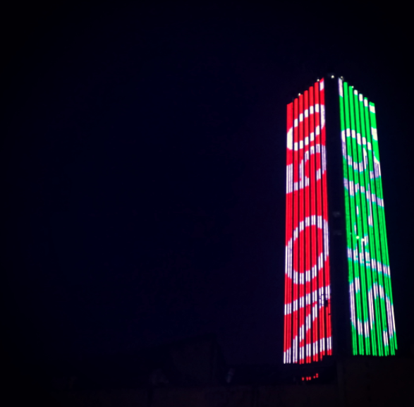

7 Formato Grande
You would need heights equipment. Investment could start at around 10k USD to create this visualizations. Material sizes would need to be at least 50 meters in length. Visualizations could be seen from a distance of a couple hundred meters.
Take this intervention of colombian artist Doris Salcedo.

Figure 7.1: Doris Salcedo https://www.theguardian.com/world/2016/oct/12/colombia-war-art-project-bogota-doris-salcedo
Or this visualization of the results of Colombia’s peace agreeement referendum of 2016 shown in Bogota’s largest building.

Figure 7.2: https://www.instagram.com/p/BLFCFloDnjF/